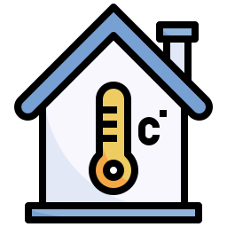

Proyecto N° 5: Control de temperatura ambiente
I. Presentación:
Se aproxima el verano, y ya comienza a subir la temperatura. A veces es agradable: podemos disfrutar un día soleado, ir a la pileta o comer un rico helado. Pero otras veces, el calor puede ser tan intenso que nos sentimos sofocados, cansados… ¡y hasta podemos sufrir un golpe de calor!
Por eso, en este proyecto vamos a investigar cómo el clima afecta nuestra vida diaria y cómo podemos usar la tecnología para cuidarnos mejor.
Desafío: Construir un modelo con el kit de Rasti que permita medir la temperatura y, según el resultado, encender un aire acondicionado (representado por un LED):
II. Investigación:
- Leer el texto a continuación:
- Completar el minilibro, decorar, recortar, armar y pegar en la carpeta.
- Colorear en un mapa político de Argentina N° 3, los tipos de climas como se muestra en la imagen. Luego escribe el nombre de cada provincia.
- Cálidos: color rojo
- Templados: color amarillo
- Áridos: color marrón
- Fríos: color celeste
- Dibujar y completar la tabla de roles.
- ¿Qué componentes utilizarán y a qué puertos los conectarán?
- Construir la maqueta siguiendo la guía de armado (3.1 Parque de diversiones).
- Escribir el algoritmo del programa.
- Explicar el funcionamiento del modelo.
- ¿Qué dificultades encontraron y cómo las solucionaron?
- ¿Qué mejoras le agregarían?
- ¿Cómo calificas el desempeño del equipo?
El clima es algo que vivimos todos los días, pero quizás no siempre nos detenemos a pensar en cómo funciona. Cuando hablamos de clima, nos referimos a cómo es el tiempo en un lugar durante un largo período. El clima en nuestro país es muy variado debido a su gran extensión. Podemos encontrar climas cálidos hacia el norte, donde hace mucho calor y suele haber poca lluvia; los climas templados no son ni muy fríos, ni muy calientes y las estaciones del año están bien marcadas, mientras que en otros lugares hace mucho frío, como en el sur de Argentina, donde el clima es frío y en invierno incluso puede nevar.
La temperatura es uno de los factores más importantes del clima. Es lo que nos indica si hace calor o frío, y la medimos en grados Celsius (°C). Seguramente has escuchado en la televisión o en el celular cuando dicen que hoy hay 30 grados. Eso significa que hace calor. Si alguna vez escuchaste que hay 10 grados o menos, ya sabes que tendrás que abrigarte bien porque el día está frío. La temperatura varía mucho según dónde vivas y la época del año en que te encuentres. En verano, por ejemplo, las temperaturas suelen ser más altas, mientras que en invierno bajan considerablemente.
Además de la temperatura, otro factor importante es la precipitación, que es el agua que cae del cielo en forma de lluvia, nieve o granizo. Si vives en un lugar donde llueve mucho, seguro has notado que todo a tu alrededor está más verde, porque la lluvia ayuda a que las plantas crezcan. En cambio, en los lugares donde llueve poco, como en las zonas desérticas, las plantas son más pequeñas o casi no hay.
Hablando del agua en el aire, también es importante entender la humedad. La humedad es la cantidad de vapor de agua que hay en el aire. Seguramente, has sentido días en los que parece que el calor es más insoportable. Eso se debe a que cuando la humedad es alta, el aire se siente pegajoso o pesado, y nos hace sentir más calor del que realmente hace. En cambio, cuando la humedad es baja, el aire es más seco y nos sentimos más cómodos, aunque haga calor.
Pero el clima no solo se trata de temperatura, lluvia y humedad, también tiene que ver con el viento. El viento es el aire en movimiento y puede ser suave o muy fuerte. El viento arrastra las nubes, seca la humedad de una zona y la acumula en otra.
Finalmente, aunque el clima es algo que cambia lentamente a lo largo del tiempo, el tiempo es lo que está ocurriendo en este preciso momento. Hoy puede estar soleado, pero mañana puede llover, o tal vez ahora hace frío, pero más tarde suba la temperatura. El tiempo puede variar de un día para otro, o incluso de una hora a otra.
Todo esto está relacionado y nos ayuda a entender mejor cómo funciona nuestro planeta y por qué el clima es tan importante para nuestras vidas diarias.
III. Planificación:
IV. Crear:
V. Reflexionar y Compartir: